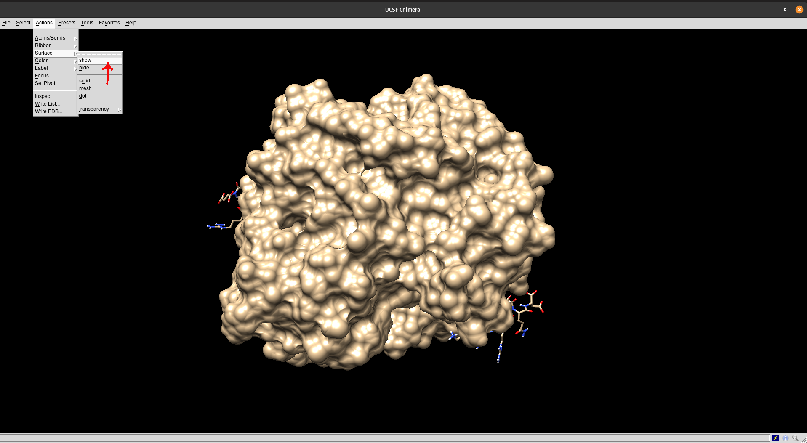

Análise da Superfície Eletrostática por APBS
Por que analisar a superfície eletrostática e a solvatação de uma molécula?
Uma compreensão das interações eletrostáticas é essencial para o estudo dos processos biomoleculares. A integração desta informação em modelos físicos para a descoberta de fármacos ou outras aplicações requer a capacidade de avaliar as interações energéticas dentro e entre os biopolímeros. Entre os vários componentes da energia molecular, as propriedades de solvatação e as interações eletrostáticas são de especial importância devido ao longo alcance destas interações e às cargas substanciais dos componentes típicos dos biopolímeros.
Traduzido e adaptado de: https://www.poissonboltzmann.org/
Adicionalmente, tais alterações podem explicar mudanças na superfície a partir de modificações na sequência de aminoácidos. Por exemplo: uma modificação em um sítio que não seja o sítio de ligação. Muitos programas de docking molecular continuarão a prever a ligação com o ligante, alguns sem prejuízo na função de pontuação energética. No entanto, tal modificação pode exercer consequências na superfície eletrostática que podem alterar a afinidade de ligação, mesmo o sítio estando intacto espacial e geometricamente. Uma análise da eletrostática pode revelar tais mudanças e dar sustentação a resultados encontrados in vitro ou in vivo.
Breve teoria
O solvente desempenha um papel crucial na mediação de processos bioquímicos como a interação entre proteínas e entre proteínas e ligantes. Esses eventos ocorrem frequentemente em um ambiente composto por água e íons. Para modelar proteínas em um ambiente tão complexo, moléculas de água e íons podem ser tratados de forma explícita ou implícita (continuum). A primeira permite uma simulação mais precisa, mas é mais "cara" do ponto de vista computacional. Por outro lado, os métodos de solventes implícitos são afetados pelos inconvenientes relacionados à menor precisão, mas são mais rápidos e mais adequados (Vascon et al. 2020).
As propriedades eletrostáticas dependem da distribuição total ou parcial das cargas na superfície 3D de uma proteína. A Lei de Coulomb, normalmente utilizada para descrever o potencial eletrostático, não é adequada para descrever a eletrostática em proteínas, pois descrevem o sistema como um meio dielétrico único. No entanto, as proteínas são um núcleo hidrofóbico envolvido por um solvente. Para este caso, a equação de Poisson-Boltzmann (PBE) é mais adequada para calcular a eletrostática de uma proteína, tratando o solvente de forma implícita e, assim, os efeitos dinâmicos da água não são diretamente internalizados, levando a um melhor entendimento da eletrostática da superfície da proteína.
Como fazer isso?
Existem algumas aplicações simples em programas de visualização de estruturas moleculares que podem fazer essa predição. No entanto, a literatura cita bastante a utilização da ferramenta APBS (Adaptive Poisson-Boltzmann Solver). A aplicação resolve as equações de eletrostática contínua para predição de interações biomoleculares.
O APBS requer dados estruturais precisos e completos, como parâmetros de campo de força, como cargas atômicas e raios e, principalmente, a adição de coordenadas atômicas ausentes em estruturas .pdb. Do mesmo grupo do APBS, temos uma aplicação chamada PDB2PQR, que automatiza muitas das tarefas comuns de preparação de estruturas para cálculos de solvatação contínua. Tais tarefas incluem:
-
Acrescentar quando necessário átomos pesados (não-hidrogênicos) em falta às estruturas.
-
Estimar os estados de titulação e protonar biomoléculas de forma consistente e favorável à formação de ligações de hidrogênio.
-
Atribuição de parâmetros de carga e raio a partir de uma variedade de campos de força.
O PDB2PQR gera um arquivo de saída .pqr que pode ser utilizado em vários programas de bioinformática estrutural.
Usando o APBS
Este serviço destina-se a facilitar a configuração e execução de cálculos eletrostáticos tanto para especialistas quanto para não especialistas e, assim, ampliar a acessibilidade da solvatação biomolecular e análises eletrostáticas à comunidade biomédica. Usaremos o exemplo (outros exemplos em documentação do APBS) do receptor de estrógeno do organismo Homo sapiens. Vamos primeiramente utilizar a ferramenta presente no servidor web (APBS), para depois visualizar os resultados no programa UCSF Chimera. Nesse servidor os programas PDB2PQR e APBS já estão interligados entre si.
Passos
-
Abra a página do PDB2PQR no APBS server.
-
No campo
PDB IDcoloque o código 5E15 e preencha as opções de acordo com a figura abaixo.

-
Clique em
Start Job. -
Na página seguinte faça o download do arquivo .pqr. Depois clique em
Use results with APBS, em azul, no canto superior direito da página.
-
Na próxima página, salve os arquivos terminados em
.dxe em.mc. Eles serão necessários para a visualização posterior com os programas. -
Você pode visualizar no próprio navegador, clicando em
View in 3DMole ir para a página de visualização
Os arquivos .dx e .pqr estão disponibilizados abaixo (para evitar você ter de carregar o servidor toda vez que for executar esse tutorial):
Entendendo a visualização
A visualização padrão (como na figura acima) demonstra inicialmente a acessibilidade por solvente e uma escala do potencial eletrostático de superfície. A cada ponto é atribuído um potencial (em kT/e), ou seja, um valor de 1,0 significa que a energia para uma carga unitária neste ponto é de 1 kT (0,591 kcal/mol). k é a constante de Boltzmann (1.380649×10−23 J⋅K−1) e T é a temperatura absoluta em Kelvin. Valores negativos e positivos são normalmente representados em uma escala que vai do vermelho ao azul, respectivamente. Você pode alterar a visualização para valores maiores ou menores de .
Os potenciais dentro da molécula a partir deste mapa eletrostático calculado não são particularmente interessantes porque são dominados pelas cargas atômicas. Fora da molécula, no entanto, os potenciais assumem o caráter do campo rastreado pelo solvente.
No seletor Surface você pode ainda escolher entre:
-
van der Waals - mostra o potencial eletrostático relativo as interações de mesmo nome.
-
Solvent excluded - mostra o potencial eletrostático de superfície sem considerar o solvente.
No seletor Model você escolhe a forma de visualização da estrutura proteica. As outras opções são a transparência (para verificar a estrutura por trás da superfície eletrostática) e exportar a visualização para um arquivo de figura.
Visualizando no UCSF Chimera
A visualização no UCSF Chimera é bem simples. Anteriormente, o programa tinha uma ligação com um servidor que calculava o APBS. No entanto, tal opção foi desativada. Dessa forma, obrigatoriamente você tem de realizar os cálculos de eletrostática em ferramentas externas e abrir os arquivos dentro do programa.
Vamos aos passos:
-
Abra o programa UCSF Chimera.
-
Vá em File > Open e selecione o arquivo
.pqr. A visualização da estrutura da proteína deverá aparecer. -
Agora vá em Tools > Surface/Binding Analysis > Electrostatic Surface Coloring, como mostrado na figura abaixo.
- Ao fazer isso a janela pop-up abaixo irá aparecer:

-
Clique em
Browse...(1) e selecione o arquivo.dx. Verifique se na caixa de seleção ao lado de Color surface está o nome do arquivo.dxselecionado. Deixe a janela acima aberta. -
Agora precisamos mostrar a superfície da molécula. Vá em Actions > Surface > Show..., de acordo com o mostrado na figura abaixo:

- Agora volte na janela pop-up Surface Color e na caixa de seleção ao lado de Color surface, selecione MS MS main surface... .pqr e clique em
Color(2). Pode demorar um pouco.

- A visualização final ficará como a figura abaixo:

- Na mesma janela acima você pode alterar você pode alterar a visualização para valores maiores ou menores de . Outras opções podem ser modificadas clicando no botão
Optionsda janela Surface Color. - Note o encaixe de um dos ligantes (no caso um ligante proteico o coativador transcricional nuclear 2) no seu sítio na proteína. Veja a complementariedade entre as duas em termos de potenciais negativos e positivos.